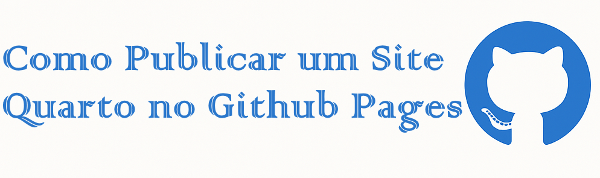

project:
type: website
output-dir: docsPublicando Site Quarto no Github
code
analysis
R

1 🚀 Como Publicar um Site Quarto no GitHub Pages
Publicar um site feito com Quarto usando o GitHub Pages é uma maneira prática e gratuita de compartilhar seu conteúdo online. Abaixo, apresento um passo a passo simples e eficaz para configurar tudo corretamente.
1.1 🌐 Pré-requisitos
Antes de começar, verifique se você possui os seguintes itens instalados e configurados:
- ✅ Uma conta ativa no GitHub
- ✅ O Git instalado e configurado no seu sistema
- ✅ O R, RStudio e o pacote
quartodevidamente instalados
1.2 🛠️ Criar o repositório no GitHub
- Acesse github.com e clique em “New Repository” (ou “Novo repositório”).
- Escolha um nome para o seu repositório:
- Para um site ou blog comum:
- 👉
meu_website,meu_blogou outro nome de sua preferência
- 👉
- Para uma página pessoal principal (formato recomendado pelo GitHub):
- 👉
nome-de-usuario.github.io
(substituanome-de-usuariopelo seu nome real no GitHub, por exemplo:astuciasnor.github.io)
- 👉
- Importante:
Não marque nenhuma opção como “Add a README file”, “.gitignore” ou “LICENSE” neste momento.
Esses arquivos serão criados e configurados posteriormente, conforme as boas práticas de versionamento com Quarto.
1.3 💻 Criar seu website ou blog no RStudio
Esta etapa pode ser feita antes da criação do repertório no Github. Por razões de boa prática de uso do Git, optamos por fazer primerio o repositório no Github.
Para criar seu website ou blog, siga os passos abaixo no RStudio para gerar automaticamente seu projeto Quarto:
- Vá até o menu: File > New Project > Quarto Website (ou Quarto Blog, se for o caso)
- Dê ao projeto o mesmo nome do repositório criado no GitHub, para manter a consistência. Você pode usar, por exemplo:
👉
meu_website(para um site genérico)👉
meu_blog(para blogs com estrutura de postagens)👉
nome-de-usuario.github.io(para sua página pessoal principal, substituindo pelo seu nome de usuário real do GitHub — ex:astuciasnor.github.io)
- Escolha o diretório local onde o projeto será salvo no seu computador.
- Clique em Create Project para finalizar a criação.
O RStudio abrirá automaticamente o novo projeto com os arquivos iniciais (index.qmd, _quarto.yml etc.) prontos para edição e publicação.
1.4 🔧 Ajustar o arquivo _quarto.yml
No RStudio, localize e abra o arquivo
_quarto.ymldo seu projeto.Adicione a linha
output-dir: docslogo abaixo da linhatype: website, conforme o exemplo abaixo:
- Salve o arquivo (
Ctrl + SouFile > Save).
Essa configuração define que os arquivos gerados pelo Quarto serão salvos na pasta docs, que é a exigência do GitHub Pages para publicar seu site.
1.5 🧪 Renderizar o site localmente
Para gerar e visualizar seu site Quarto no navegador, você pode fazer isso de duas formas:
- Clique no botão ▶️ “Render” no canto superior direito do RStudio,
ou - Execute o comando abaixo diretamente no console do RStudio:
quarto::quarto_render()Após a renderização:
- A página HTML do seu site será aberta automaticamente no navegador.
- Verifique se a pasta
docs/foi criada na aba Files do RStudio. É dentro dela que o Quarto salva os arquivos do site que serão enviados ao GitHub.
1.6 🚀 Commit e push para o GitHub
Após renderizar seu site localmente, é hora de enviar os arquivos para o repositório no GitHub. Você pode fazer isso pelo terminal (integrado ao RStudio) ou pela interface Git do próprio RStudio.
1.6.1 ✅ Comandos via terminal
Antes de rodar os comandos abaixo, você precisa copiar o link do seu repositório no GitHub. Para isso:
Vá até a página do seu repositório no GitHub.
Clique no botão verde Code (localizado acima da lista de arquivos).
Copie o link que aparece na aba HTTPS, como no exemplo abaixo:
https://github.com/seu-usuario/seu-repositorio.gitundefined
Depois de copiar o link HTTPS do seu repositório no GitHub, volte ao terminal do RStudio e digite o seguinte comando:
git remote add originEm seguida, cole o link copiado logo após esse comando, ficando assim:
# Exemplo 1 — para página pessoal
git remote add origin https://github.com/nome-de-usuario.github.io.git
# Exemplo 2 — para outro tipo de site ou blog
git remote add origin https://github.com/nome-de-usuario/my_page.git📌 Lembre-se de substituir nome-de-usuario pelo seu usuário real no GitHub, e my_page pelo nome do seu repositório.
- Execute os comandos abaixo no terminal para preparar e enviar os arquivos ao Github:
# Define o nome da branch principal como 'main'
git branch -M main
# Adiciona todos os arquivos ao controle de versão
git add .
# Cria um commit com uma mensagem
git commit -m "adicionando site"
# Envia os arquivos para o GitHub
git push -u origin main1.6.2 💡 Observações importantes
Certifique-se de que o projeto foi inicializado com Git (ícone Git no canto superior direito do RStudio).
Se o projeto já foi conectado a um repositório remoto, não execute novamente
git remote add origin ..., pois isso geraria conflito.Após o
git push, os arquivos do seu site estarão publicados no GitHub.
1.7 ⚙️ Configurar o GitHub Pages
Agora que os arquivos do site estão no repositório, é hora de ativar o GitHub Pages para publicá-lo na web:
- Acesse seu repositório no GitHub.
- Vá para a aba Settings (Configurações) — ela fica no canto superior direito do repositório.
- No menu lateral, clique em Pages (ou procure por “Pages” na barra de busca).
- Em Source, configure os seguintes valores:
- Branch:
main - Folder:
/docs
- Branch:
- Clique no botão Save.
1.8 🎉 Pronto!
🔄 Após alguns segundos, seu site estará publicado e acessível em qualquer navegador. O endereço depende do nome que você deu ao repositório no GitHub:
🔗
https://nome-de-usuario.github.io/meu_website(quando o nome do repositório é diferente do seu nome de usuário)
🔗
https://nome-de-usuario.github.io/(quando o repositório se chama nome-de-usuario.github.io)
Exemplos:
https://astuciasnor.github.io/
https://astuciasnor.github.io/meu_website
Parabéns! 🥳 Seu site com Quarto e GitHub Pages já está no ar.
1.9 📝 Editar/adicionar os arquivo .gitignore e LICENSE.md
Como etapa final, vamos ajustar o arquivo .gitignore e criar a licença do projeto:
1.9.1 ✏️ Editar o .gitignore:
- Acesse o repositório no GitHub e localize o arquivo
.gitignore. - Clique no nome do arquivo e depois no ícone de lápis ✏️ para editá-lo.
- Substitua o conteúdo por um modelo apropriado para projetos em R.
- Remova a linha
/docs, se estiver presente (ela impediria a publicação do site). - Escreva uma mensagem de commit explicando a alteração e clique em Commit changes.
1.9.2 📄 Adicionar o arquivo de licença:
- No repositório, clique em “Add file” > “Create new file”.
- Nomeie o novo arquivo como:
LICENSE.md - Insira o conteúdo da licença desejada (por exemplo, a MIT License, disponível como sugestão no GitHub).
- Clique em Commit new file para salvar.
1.9.3 🔄 Atualizar o repositório local:
Após essas alterações, volte ao RStudio e clique no botão Pull na aba Git para sincronizar o repositório local com o remoto.